Grace Miu
I’m Grace Miu, a motivated creative individual. Throughout my career in high school I have won art contests and have designed countless logos. Applying my graphic design skills from the multimedia pathway, I have created Club merchandise logos to advertising fliers.
In addition, I excel in working in groups. With strong communication skills, I find it enjoyable and more efficient to work with groups. This is because in groups there is always a stir of new ideas since no two people think alike. Because I enjoy collaboration with my peers, I joined many clubs in high school. Through my board positions at school, I got to interact with many bright and inspiring people from my own peers to teachers and advisors at school. I am glad that I pushed myself to be a part of a larger group in school because being around peers with the same goals as yourself helps cultivate a huge thriving community. Working with other people really taught me better communication and the joy of seeing what others bring to the table. Not just in club and school activities, collaboration helps create a better sense of community. Compared to middle school where I was more soft spoken and less involved, being so involved in high school clubs and activities made the high school experience so much better. While I would not go back to high school, I will always be grateful for my high school experience. With my efforts to be a part of something bigger than myself, I became a part of my high school's beautiful mixture of clubs and activities. Through those activities, I was able to belong to a greater bigger concept, while also shining as an individual.
Currently I am an undergraduate student at the University of California Riverside, studying for an undergraduate degree in Pre-Business. After applying to University of California Riverside’s Business school, I plan to specialize in accounting. While I’m not laser focused on any specific future job, in about five years I hope to accomplish a Masters in accounting. In addition I would like to take California’s Certified Public Accountant test. In my family, I have numerous aunts and uncles that are accountants. Since I look up to them, I do look forward to following in their footsteps. However, I know since I am a freshman, I still have a bit of time to choose another major. I am considering potentially double majoring in biology or chemistry. I hope to major in a CNAS major so that I can get my prerequisite classes to take the DAT test in the future. Since creativity is a major component of me as an individual, I love working with my hands and manual dexterity. With my creativity combined with my passion for helping others, creates the perfect motivation for becoming a dentist. I know that I might not be able to make a huge positive difference on the world, but I can make a huge positive impact on some peoples’ worlds.
Experience
Division News Editor
• ~200 Volunteer Hours
• Published monthly 20 page newsletters
• managed about 11 editors from different schools
President
• Managed board of four
• Communicated with Staff and ASB
• Planned club events for school
Education
University of California Riverside
Monta Vista High School
Portfolio
 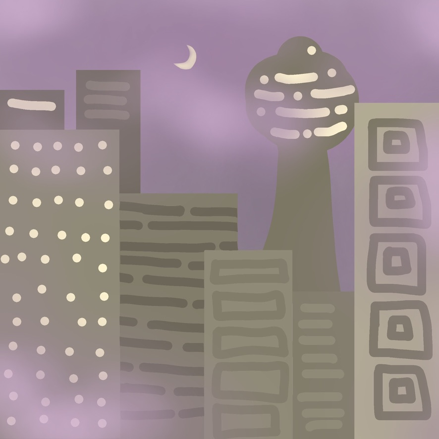
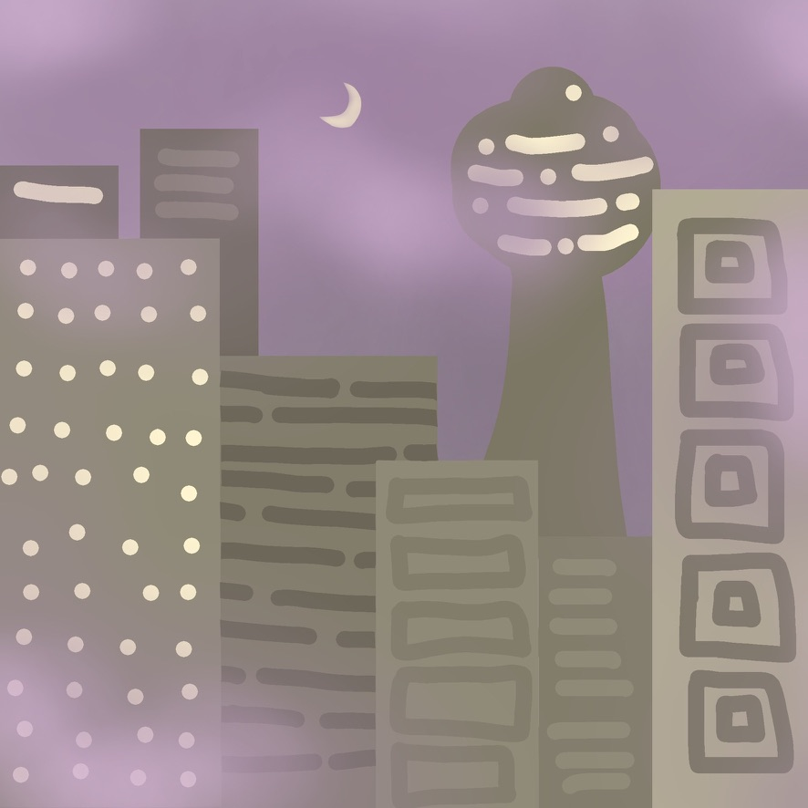
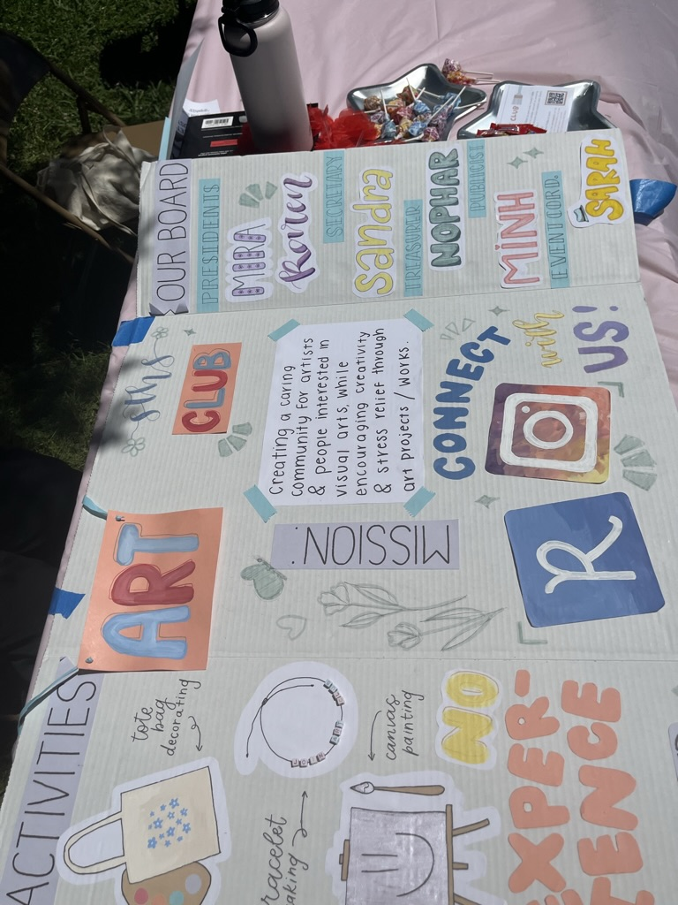
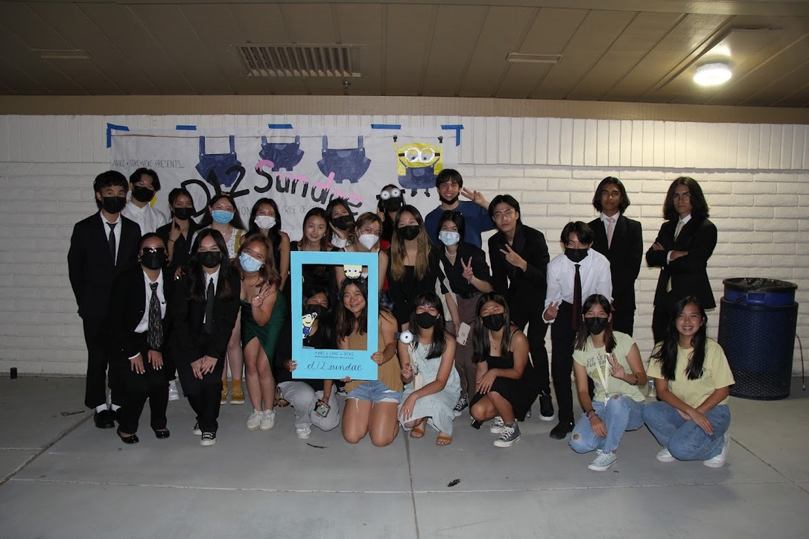
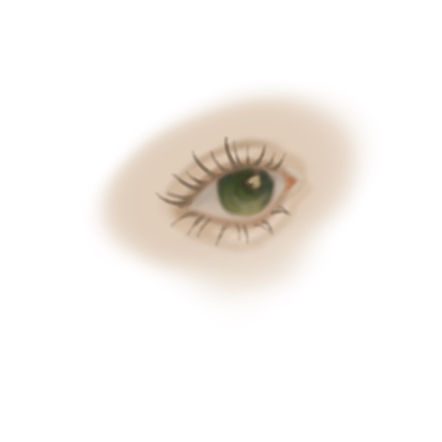
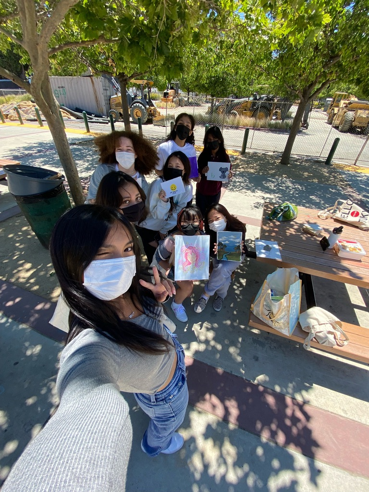
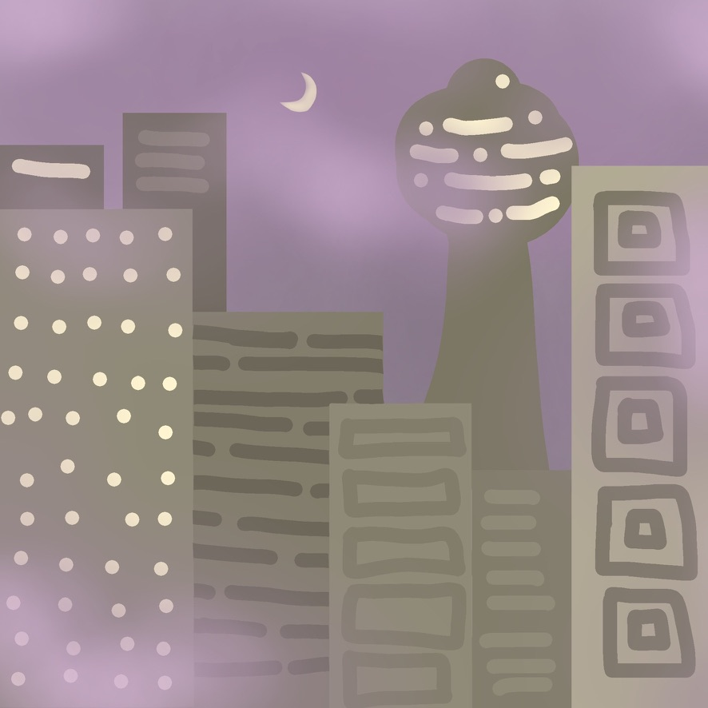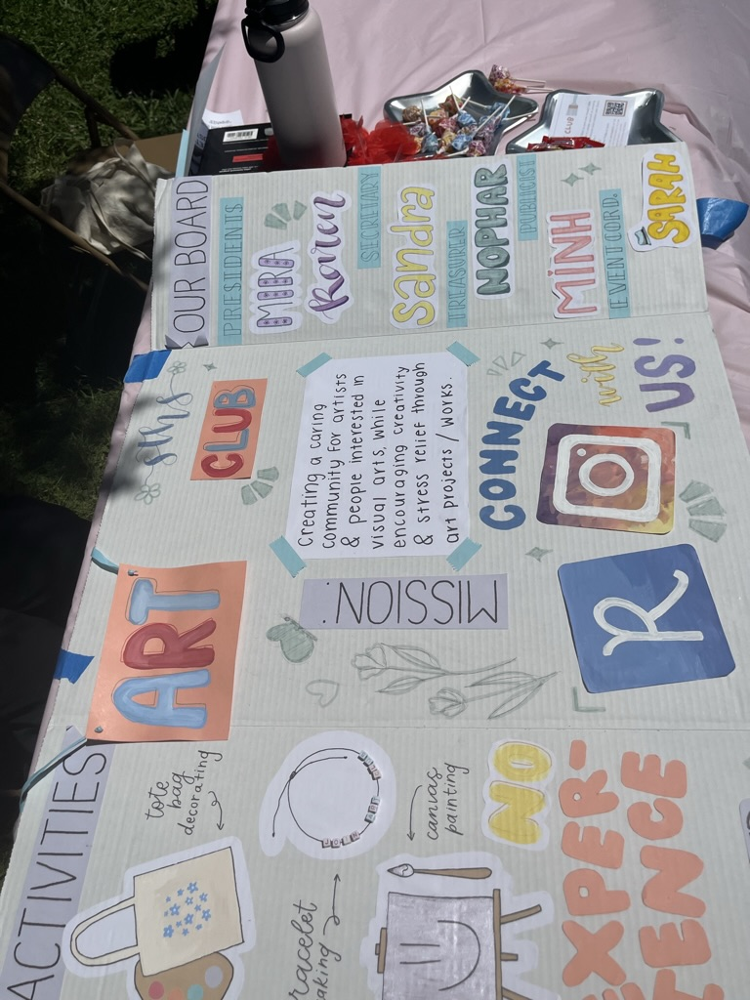 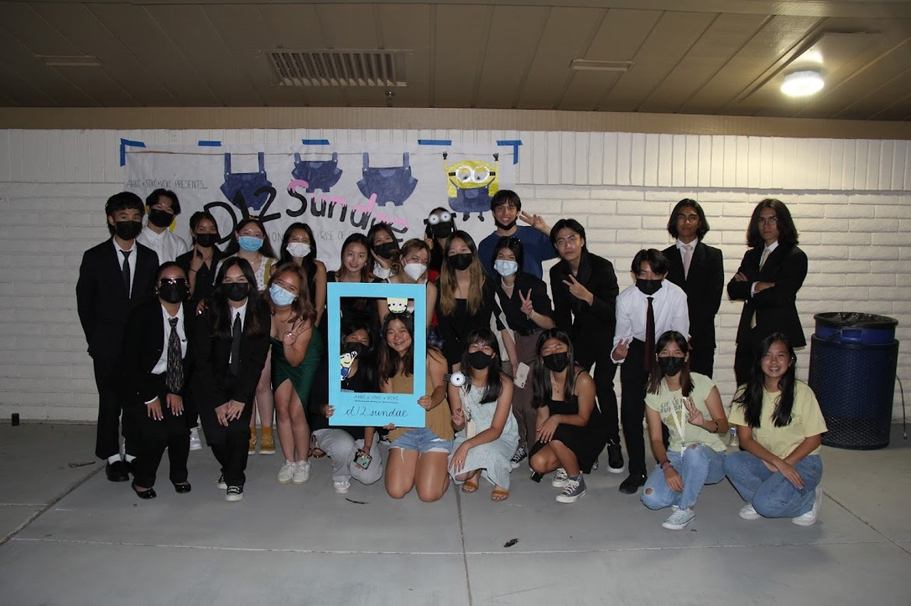
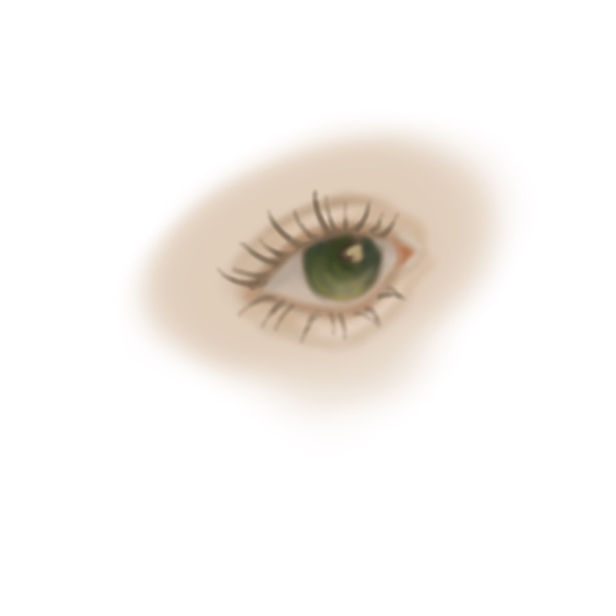 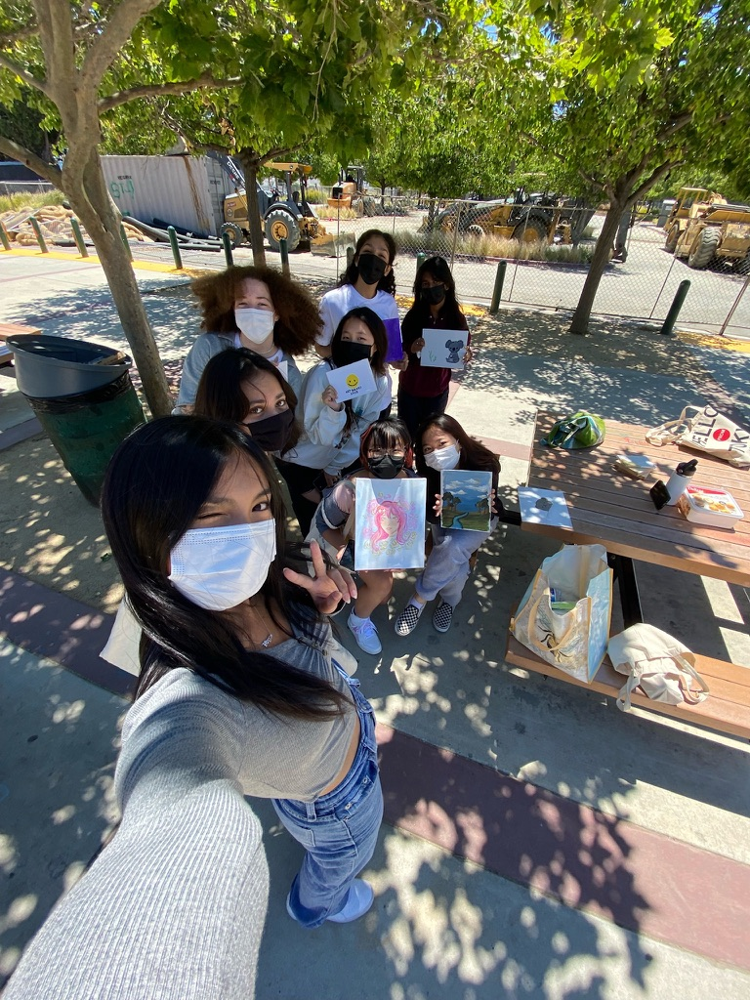